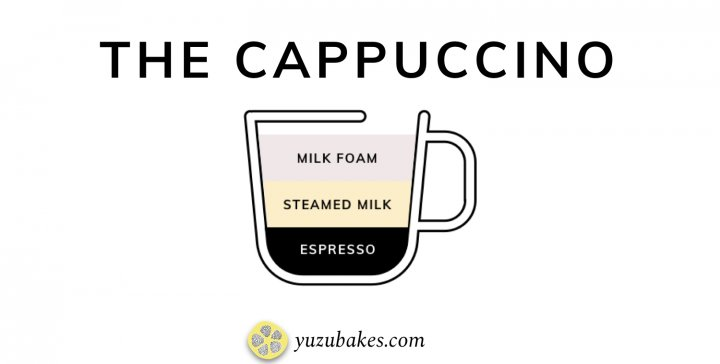

This creamy coffee drink is usually consumed at breakfast time in Italy and is loved in the United States as well. It is usually associated with indulgence and comfort because of its thick foam layer and additional flavorings that can be added to it.